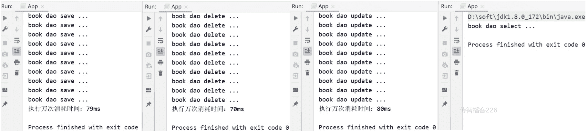
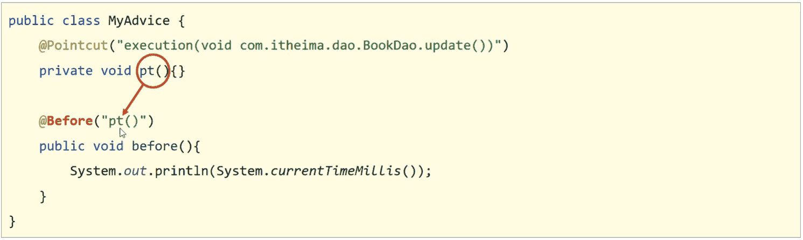

AOP简介、入门和AOP工作流程
1. AOP简介
Spring有两个核心的概念，一个是IOC/DI，一个是AOP。
对于AOP:AOP是在不改原有代码的前提下对其进行增强。
下面主要了解AOP核心概念,AOP作用:
1.1 什么是AOP?
- AOP(Aspect Oriented Programming)面向切面编程，一种编程范式，指导开发者如何组织程序结构。
- OOP(Object Oriented Programming)面向对象编程
都知道OOP是一种编程思想，那么AOP也是一种编程思想，编程思想主要的内容就是指导程序员该如何编写程序，所以它们两个是不同的编程范式。
1.2 AOP作用
- 作用:在不惊动原始设计的基础上为其进行功能增强。
前面咱们有技术就可以实现这样的功能即代理模式。
1.3 AOP核心概念
为了能更好的理解AOP的相关概念，准备了一个环境，整个环境的内容暂时可以不用关注，最主要的类为:BookDaoImpl
1 |
|
代码的内容相信大家都能够读懂，对于save方法中有计算万次执行消耗的时间。
当在App类中从容器中获取bookDao对象后，分别执行其save,delete,update和select方法后会有如下的打印结果:

这个时候，就应该有些疑问?
- 对于计算万次执行消耗的时间只有save方法有，为什么delete和update方法也会有呢?
- delete和update方法有，那什么select方法为什么又没有呢?
这个案例中其实就使用了Spring的AOP，在不惊动(改动)原有设计(代码)的前提下，想给谁添加功能就给谁添加。这个也就是Spring的理念：
- 无入侵式/无侵入式
说了这么多，Spring到底是如何实现的呢?
(1)前面一直在强调，Spring的AOP是对一个类的方法在不进行任何修改的前提下实现增强。对于上面的案例中BookServiceImpl中有save,update,delete和select方法,这些方法给起了一个名字叫连接点
(2)在BookServiceImpl的四个方法中，update和delete只有打印没有计算万次执行消耗时间，但是在运行的时候已经有该功能，那也就是说update和delete方法都已经被增强，所以对于需要增强的方法给起了一个名字叫切入点
(3)执行BookServiceImpl的update和delete方法的时候都被添加了一个计算万次执行消耗时间的功能，将这个功能抽取到一个方法中，换句话说就是存放共性功能的方法，给起了个名字叫通知
(4)通知是要增强的内容，会有多个，切入点是需要被增强的方法，也会有多个，那哪个切入点需要添加哪个通知，就需要提前将它们之间的关系描述清楚，那么对于通知和切入点之间的关系描述，给起了个名字叫切面
(5)通知是一个方法，方法不能独立存在需要被写在一个类中，这个类也给起了个名字叫通知类
至此AOP中的核心概念就已经介绍完了，总结下:
- 连接点(JoinPoint)：程序执行过程中的任意位置，粒度为执行方法、抛出异常、设置变量等
- 在SpringAOP中，理解为方法的执行
- 切入点(Pointcut):匹配连接点的式子
- 在SpringAOP中，一个切入点可以描述一个具体方法，也可也匹配多个方法
- 一个具体的方法:如com.itheima.dao包下的BookDao接口中的无形参无返回值的save方法
- 匹配多个方法:所有的save方法，所有的get开头的方法，所有以Dao结尾的接口中的任意方法，所有带有一个参数的方法
- 连接点范围要比切入点范围大，是切入点的方法也一定是连接点，但是是连接点的方法就不一定要被增强，所以可能不是切入点。
- 在SpringAOP中，一个切入点可以描述一个具体方法，也可也匹配多个方法
- 通知(Advice):在切入点处执行的操作，也就是共性功能
- 在SpringAOP中，功能最终以方法的形式呈现
- 通知类：定义通知的类
- 切面(Aspect):描述通知与切入点的对应关系。
2. AOP入门案例
2.1 需求分析
案例设定：测算接口执行效率，但是这个案例稍微复杂了点，对其进行简化。
简化设定：在方法执行前输出当前系统时间。
对于SpringAOP的开发有两种方式，XML 和 注解。
因为现在注解使用的比较多，所以采用注解完成AOP的开发。
总结需求为:使用SpringAOP的注解方式完成在方法执行的前打印出当前系统时间。
2.2 思路分析
需求明确后，具体该如何实现，都有哪些步骤，先来分析下:
1.导入坐标(pom.xml)
2.制作连接点(原始操作，Dao接口与实现类)
3.制作共性功能(通知类与通知)
4.定义切入点
5.绑定切入点与通知关系(切面)
2.3 环境准备
-
创建一个Maven项目
-
pom.xml添加Spring依赖
1
2
3
4
5
6
7<dependencies>
<dependency>
<groupId>org.springframework</groupId>
<artifactId>spring-context</artifactId>
<version>5.2.10.RELEASE</version>
</dependency>
</dependencies> -
添加BookDao和BookDaoImpl类
1
2
3
4
5
6
7
8
9
10
11
12
13
14
15
16
17public interface BookDao {
public void save();
public void update();
}
public class BookDaoImpl implements BookDao {
public void save() {
System.out.println(System.currentTimeMillis());
System.out.println("book dao save ...");
}
public void update(){
System.out.println("book dao update ...");
}
} -
创建Spring的配置类
1
2
3
4
public class SpringConfig {
} -
编写App运行类
1
2
3
4
5
6
7public class App {
public static void main(String[] args) {
ApplicationContext ctx = new AnnotationConfigApplicationContext(SpringConfig.class);
BookDao bookDao = ctx.getBean(BookDao.class);
bookDao.save();
}
}
-
运行结果：
1
21702371348398
book dao save ...
最终创建好的项目结构如下:
1 | spring_18_aop_quickstart |
说明:
- 目前打印save方法的时候，因为方法中有打印系统时间，所以运行的时候是可以看到系统时间
- 对于update方法来说，就没有该功能
- 要使用SpringAOP的方式在不改变update方法的前提下让其具有打印系统时间的功能。
2.4 AOP实现步骤
步骤1:添加依赖
pom.xml
1 | <dependency> |
AspectJ是一个面向切面编程（AOP）的框架，可以在运行时通过织入切面来改变程序的行为。
- 因为之前导入的
spring-context依赖中已经包含了spring-aop,所以不需要再单独导入spring-aop - 导入AspectJ的jar包,AspectJ是AOP思想的一个具体实现，Spring有自己的AOP实现，但是相比于AspectJ来说比较麻烦，所以直接采用Spring整合ApsectJ的方式进行AOP开发。
步骤2:定义接口与实现类
1 | 环境准备的时候，BookDaoImpl已经准备好，不需要做任何修改 |
步骤3:定义通知类和通知
通知就是将共性功能抽取出来后形成的方法，共性功能指的就是当前系统时间的打印。
1 | public class MyAdvice { |
类名和方法名没有要求，可以任意。
步骤4:定义切入点
BookDaoImpl中有两个方法，分别是save和update，要增强的是update方法，该如何定义呢?
1 | public class MyAdvice { |
说明:
- 切入点定义依托一个不具有实际意义的方法进行，即无参数、无返回值、方法体无实际逻辑。
- execution及后面编写的内容，后面会说。
步骤5:制作切面
切面是用来描述通知和切入点之间的关系，如何进行关系的绑定?
1 | public class MyAdvice { |
绑定切入点与通知关系，并指定通知添加到原始连接点的具体执行位置

说明:@Before翻译过来是之前，也就是说通知会在切入点方法执行之前执行，除此之前还有其他四种类型，后面会讲。
步骤6:将通知类配给容器并标识其为切面类
1 |
|
步骤7:开启注解格式AOP功能
1 |
|
步骤8:运行程序
1 | public class App { |
看到在执行update方法之前打印了系统时间戳，说明对原始方法进行了增强，AOP编程成功。
1 | 1702372550995 |
知识点1：@EnableAspectJAutoProxy
| 名称 | @EnableAspectJAutoProxy |
|---|---|
| 类型 | 配置类注解 |
| 位置 | 配置类定义上方 |
| 作用 | 开启注解格式AOP功能 |
知识点2：@Aspect
| 名称 | @Aspect |
|---|---|
| 类型 | 类注解 |
| 位置 | 切面类定义上方 |
| 作用 | 设置当前类为AOP切面类 |
知识点3：@Pointcut
| 名称 | @Pointcut |
|---|---|
| 类型 | 方法注解 |
| 位置 | 切入点方法定义上方 |
| 作用 | 设置切入点方法 |
| 属性 | value（默认）：切入点表达式 |
知识点4：@Before
| 名称 | @Before |
|---|---|
| 类型 | 方法注解 |
| 位置 | 通知方法定义上方 |
| 作用 | 设置当前通知方法与切入点之间的绑定关系，当前通知方法在原始切入点方法前运行 |
3. AOP工作流程
AOP的入门案例已经完成，对于刚才案例的执行过程，就得来分析分析，这一节主要讲解两个知识点:AOP工作流程和AOP核心概念。其中核心概念是对前面核心概念的补充。
3.1 AOP工作流程
由于AOP是基于Spring容器管理的bean做的增强，所以整个工作过程需要从Spring加载bean说起:
流程1:Spring容器启动
- 容器启动就需要去加载bean,哪些类需要被加载呢?
- 需要被增强的类，如:BookServiceImpl
- 通知类，如:MyAdvice
- 注意此时bean对象还没有创建成功
流程2:读取所有切面配置中的切入点
1 | @Component |
- 上面这个例子中有两个切入点的配置，但是第一个
ptx()并没有被使用，所以不会被读取。
流程3:初始化bean，
判定bean对应的类中的方法是否匹配到任意切入点
-
注意第1步在容器启动的时候，bean对象还没有被创建成功。
-
要被实例化bean对象的类中的方法和切入点进行匹配
- 匹配失败，创建原始对象,如
UserDao- 匹配失败说明不需要增强，直接调用原始对象的方法即可。
- 匹配成功，创建原始对象（目标对象）的代理对象,如:
BookDao- 匹配成功说明需要对其进行增强
- 对哪个类做增强，这个类对应的对象就叫做目标对象
- 因为要对目标对象进行功能增强，而采用的技术是动态代理，所以会为其创建一个代理对象
- 最终运行的是代理对象的方法，在该方法中会对原始方法进行功能增强
- 匹配失败，创建原始对象,如
流程4:获取bean执行方法
- 获取的bean是原始对象时，调用方法并执行，完成操作
- 获取的bean是代理对象时，根据代理对象的运行模式运行原始方法与增强的内容，完成操作
验证容器中是否为代理对象
为了验证IOC容器中创建的对象和刚才所说的结论是否一致，首先先把结论理出来:
- 如果目标对象中的方法会被增强，那么容器中将存入的是目标对象的代理对象
- 如果目标对象中的方法不被增强，那么容器中将存入的是目标对象本身。
验证思路
1.要执行的方法，不被定义的切入点包含，即不要增强，打印当前类的getClass()方法
2.要执行的方法，被定义的切入点包含，即要增强，打印出当前类的getClass()方法
3.观察两次打印的结果
步骤1:修改App类,获取类的类型
1 | public class App { |
执行结果：
1 | com.itheima.dao.impl.BookDaoImpl@47caedad |
步骤2:修改MyAdvice类，不增强
因为定义的切入点中，被修改成update1,所以BookDao中的update方法在执行的时候，就不会被增强，
所以容器中的对象应该是目标对象本身。
1 |
|
步骤3:运行程序
1 | com.itheima.dao.impl.BookDaoImpl@4bdeaabb |
步骤4:修改MyAdvice类，增强
因为定义的切入点中，被修改成update,所以BookDao中的update方法在执行的时候，就会被增强，
所以容器中的对象应该是目标对象的代理对象
1 |
|
步骤5:运行程序
1 | com.itheima.dao.impl.BookDaoImpl@47caedad |
至此对于刚才的结论，就得到了验证，这块大家需要注意的是:
不能直接打印对象，从上面两次结果中可以看出，直接打印对象走的是对象的toString方法，不管是不是代理对象打印的结果都是一样的，原因是内部对toString方法进行了重写。
3.2 AOP核心概念
在上面介绍AOP的工作流程中，提到了两个核心概念，分别是:
- 目标对象(Target)：原始功能去掉共性功能对应的类产生的对象，这种对象是无法直接完成最终工作的。它是经过剥离了共性功能后的原始对象，但它本身无法直接完成最终工作，需要经过处理才能完成特定的任务。
- 代理(Proxy)：目标对象无法直接完成工作，需要对其进行功能回填，通过原始对象的代理对象实现
上面这两个概念比较抽象，简单来说，
目标对象就是要增强的类[如:BookServiceImpl类]对应的对象，也叫原始对象，不能说它不能运行，只能说它在运行的过程中对于要增强的内容是缺失的。
SpringAOP是在不改变原有设计(代码)的前提下对其进行增强的，它的底层采用的是代理模式实现的，所以要对原始对象进行增强，就需要对原始对象创建代理对象，在代理对象中的方法把通知[如:MyAdvice中的method方法]内容加进去，就实现了增强,这就是所说的代理(Proxy)。